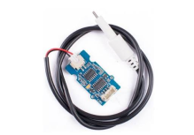
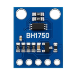
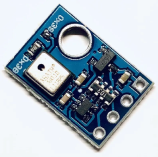
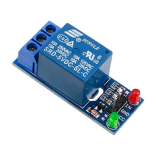

| Time | pH | EC | water temp (°C) | LIGHT (lx) | humidity | Status |
|---|---|---|---|---|---|---|
|
Tidak ada data sensor terhubung (Status: Terputus / N/A)
|
||||||




| Time | air temperature | humidity | Solar Radiation & PAR |
|---|---|---|---|
|
Tidak ada data riwayat AWS (Sensor Terputus / N/A)
|
|||